UD3: PORTFOLIO - ESTRUCTURAS DE CONTROL¶
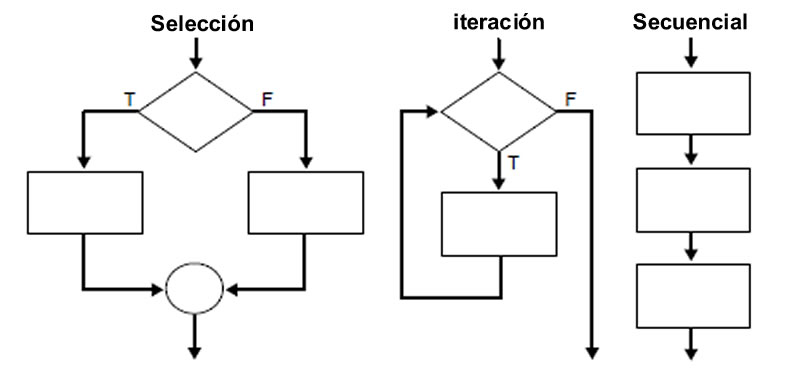
Duración de la unidad: 11 sesiones
INTRODUCCIÓN¶
En esta unidad vamos a tomar como base la revisión de programación vista en la unidad anterior, y vamos a profundizar más en determinadas estructuras de control de los lenguajes PHP, al tiempo que empezaremos a desarrollar el primer proyecto del curso: el portfolio.
En una primera fase prepararemos el entorno de desarrollo mediante la tecnología Docker. A continuación se proporcionará parte de la interfaz gráfica de la aplicación y se realizarán ejercicios básicos con estructuras de control y tipos de datos compuestos. Finalmente se propondrá la realización de actividades de desarrollo que completen el prototipo.
Este proyecto abarcará las unidades 3 a la 5, pero en la presente unidad no se utilizará acceso a base de datos, sino que se utilizarán datos embebidos en el código y ficheros.
En la unidad 2 del curso has de haberte familiarizado con lo básico del lenguaje PHP. En cualquier caso, revisa y ten a mano la información de los siguientes enlaces:
EVALUACIÓN¶
El presente documento, junto con su correspondiente boletín de actividades (publicado adicionalmente), cubren los siguientes criterios de evaluación:
| RESULTADOS DE APRENDIZAJE | CRITERIOS DE EVALUACIÓN |
|---|---|
| RA3. Escribe bloques de sentencias embebidos en lenguajes de marcas, seleccionando y utilizando las estructuras de programación. | a) Se han utilizado mecanismos de decisión en la creación de bloques de sentencias. b) Se han utilizado bucles y se ha verificado su funcionamiento. c) Se han utilizado matrices (arrays) para almacenar y recuperar conjuntos de datos. d) Se han creado y utilizado funciones. g) Se han añadido comentarios al código. |
ENTORNO DE DESARROLLO¶
El primer paso para configurar el entorno de desarrollo es la instalación de Docker. En realidad podríamos prepar el entorno de diferentes formas (directamente instalando en la máquina local, mediante máquina virtual...), pero la utilización de Docker se ve justificada por su fácil utilización, la profundización en esta tecnología en otros módulos del curso (Despliegue de aplicaciones web), y su extensa utilización en la industria (en todo tipo de entornos).
Para la Instalación de Docker es recomendable seguir la documentación oficial:
Si aún no tienes instalado Docker en tu máquina, ¡es el momento de hacerlo!
Una vez tengas instalado Docker, crea la siguiente estructura de directorios en la ruta en la que vayas a crear el proyecto:
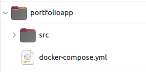
Por el momento la carpeta src está vacía. Vamos a crear el fichero docker-compose.yml (¡está a la misma altura que la carpeta src!) con el siguiente contenido:
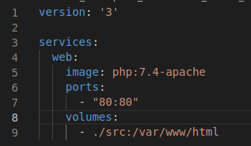
Para crear la indentación (espacios a la izquierda) pulsa el tabulador tantas veces como sea necesario.
Pues ya lo tendríamos todo para poder ejecutar nuestro código, pero... ¿cómo es posible? Este fichero docker-compose.yml va a lanzar un contenedor preconfigurado (como si fuese una pequeña máquina virtual) con PHP 7.4 y el servidor web Apache. Además, va a exponer el puerto 80 y lo va a hacer corresponder con el puerto 80 del host (nuestra máquina local); por último, todo lo que haya en el directorio src va a estar montado en la ruta /var/www/html (donde recoge Apache el código a ejecutar) del sistema de archivos del contenedor, con lo cual lo único que vamos a tener que hacer es incluir todo nuestro código en la carpeta src, y el contenedor se encargará del resto.
Vamos a hacer un prueba. Vamos a la ruta donde esté el fichero docker-compose.yml y ejecutamos el siguiente comando:
>> docker-compose up
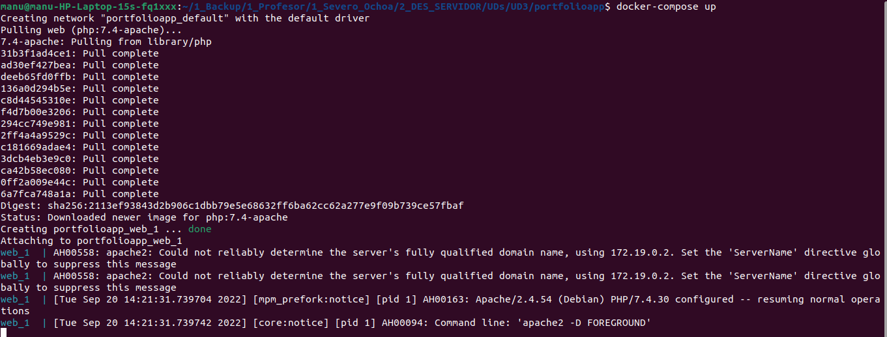
En primer lugar vemos que se han realizado una serie de descargas para conformar el contenedor (estas descargas solo se van a realizar la primera vez, a no ser que hagamos un purgado de Docker). Una vez hecho esto se lanza el contenedor (web_1) y se empiezan a mostrar las líneas de log de Apache. Si ahora consultamos en el navegador la dirección 127.0.0.1:80 (equivalente a introducir localhost, que es un alias configurado en el fichero /etc/hosts), vemos el resultado:
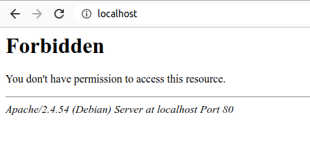
Si consultamos en log de Apache en la consola:
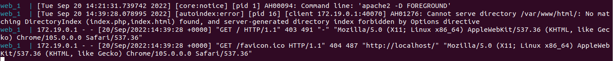
Vemos que sí se ha registrado actividad, pero: ¿por qué no se muestra nada en el navegador?
La razón es que aún no hemos introducido ningún fichero en src que Apache pueda tomar para interpretar. En el propio log lo dice:
Cannot serve directory /var/www/html/: No matching DirectoryIndex (index.php,index.html) found, and server-generated directory index forbidden by Options directive
Por tanto vamos a introducir un fichero index.php con el típico "Hola mundo":
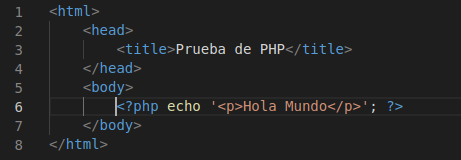
Refrescamos el navegador y vemos la salida:
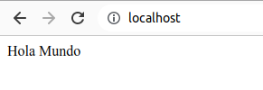
Borramos el fichero index.php, y src vuelve a estar vacío.
Podemos decir que estamos preparados para empezar nuestro proyecto.
PROYECTO - PREPARACIÓN DE LA INTERFAZ¶
Junto con el presente documento se proporciona también el punto de partida del proyecto, que va a consistir en un documento HTML, llamado index.html (pincha para descargarlo). Se han utilizado las siguientes librerías para conformar la interfaz de usuario:
- Bootstrap 5.2, para el diseño de interfaces responsivas.
- Tema Flatly basado en bootstrap, que proporciona la hoja de estilos de la interfaz.
- Font awesome 6.2, para la utilización de iconos.
Si nos fijamos en el contenido del fichero index.html proporcionado no se diferencia en nada (salvo en la utilización de las librerías anteriores) de una de las páginas estáticas programadas durante el primer curso del ciclo:
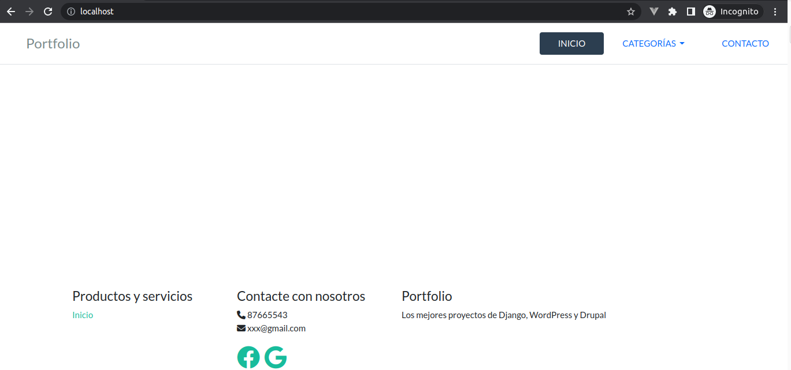
Vamos a empezar a incrustar PHP en el código HTML.
Utilización de plantillas¶
El primer paso que vamos a realizar es trocear el código HTML proporcionado. ¿Por qué? porque hay determinadas partes que siempre se repiten en cada una de las páginas: la cabecera y el pié de página.
Así, vamos a crear una carpeta "templates" (plantillas, en inglés) dentro de "src", para almacenar todos aquellos fragmentos de código HTML que podemos reutilizar de una página a otra.
Dentro de templates vamos a crear dos archivos: header.php y footer.php. También vamos a crear un archivo "index.php", pero esta vez dentro de "src" (NO dentro de "templates"!). La estructura, por el momento, queda del siguiente modo:
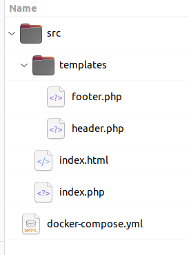
ACTIVIDAD: En clase, vamos a analizar index.html y debatir cómo segmentar el código. A continuación reorganizamos el código de index.html entre footer.php y header.php.
Una vez configuradas las plantillas, queda muy poco código HTML en index.html. Vamos ahora a poner el restante del código HTML en index.php y vaciar por completo index.html (tras lo cual eliminamos este fichero). index.php queda del siguiente modo:
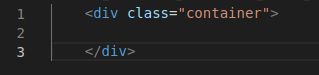
¿Cómo podemos ahora volver a estructurar la página de inicio con las plantillas? Esto se verá en el siguiente apartado.
Conformación de las páginas de la aplicación¶
Para poder estructurar las páginas de la aplicación basándonos en las plantillas, podemos utilizar la instrucción include. Modificando el fichero index.php, quedaría del siguiente modo:
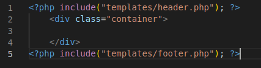
Ahora, con el contenedor Docker iniciado, si refrescamos la página, volveremos a obtener el mismo resultado que con la página web estática:
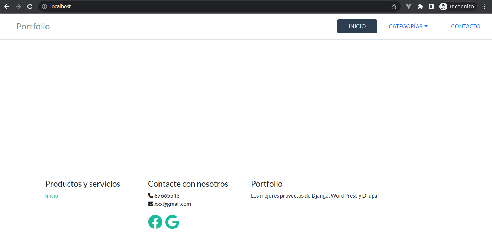
Parece que no haya cambiado nada, pero PHP ya está trabajando para nosotros. Hemos pasado de una página web estática, recogida en un solo documento, a una página modular generada con PHP. En un sitio web con multitud de páginas esto puede ser una gran ventaja.
ATENCIÓN: el orden en que han sido cargados los ficheros es importante. Si escribiésemos el siguiente fichero index.php:
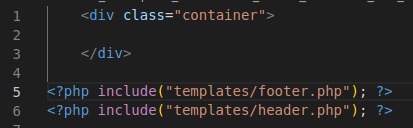
Obtendríamos el siguiente resultado:
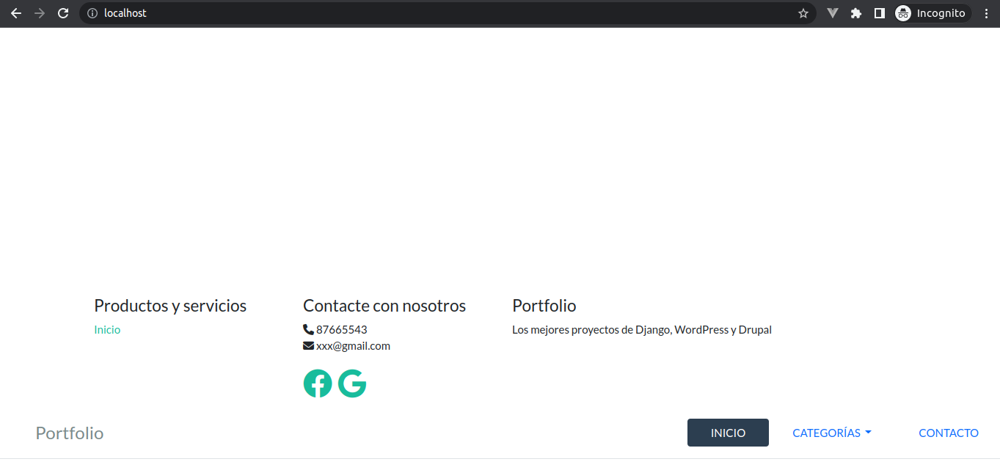
El HTML generado ni siguiera sería correcto, pero los navegadores web modernos son capaces de tomar un documento HTML incorrecto sintácticamente y representar la mejor aproximación.
Volvemos a la versión anterior de index.php tras esta pequeña prueba.
Ya tendríamos lo básico del proyecto hecho. Hemos visto la función include, pero somos programadores con mucha curiosidad, y nos preguntamos si "include" nos sirve para todos los casos o existen otras posibilidades para incluir ficheros en PHP. En el próximo apartado vamos a profundizar en esto.
Inclusión de ficheros en PHP¶
La idea de utilizar diferentes ficheros es la reutilización del código, lo que conlleva una mayor modularidad y un mejor mantenimiento del mismo. Un fichero no tiene por qué ser una plantilla, como hemos visto hasta ahora, sino que también podría ser código PHP que pudiésemos llegar a utilizar en diferentes partes de la aplicación. También se pueden dar diferentes circunstancias, y es por ello que disponemos de varias opciones:
- include(ruta/archivo); include_once(ruta/archivo);
- require(ruta/archivo); require_once(ruta/archivo);
NOTA: Si el archivo se encuentra a la misma altura (en el sistema de archivos) que el fichero en el cual se incluye, entonces solo es necesario especificar el nombre del archivo a incluir; si los dos archivos no se encuentran a la misma altura, entonces es posible especificar la ruta (absoluta o relativa) del fichero a incluir.
Las particularidades de cada instrucción son:
- require: lanza un error fatal si no encuentra el archivo.
- include: si no encuentra el archivo, emite una advertencia (warning)
- Las funciones _once sólo se cargan una vez, si ya ha sido incluida previamente, no lo vuelve a hacer, evitando bucles.
Por ejemplo, colocamos las siguientes funciones en el archivo biblioteca.php:
<?php
function suma(int $a, int $b) : int {
return $a + $b;
}
function resta(int $a, int $b) : int {
return $a - $b;
}
?>
Y posteriormente en otro archivo incluimos el anterior:
<?php
include_once("biblioteca.php");
echo suma(10,20);
echo resta(40,20);
?>
Completamos el resto de páginas¶
En este apartado vamos a completar las páginas y las plantillas de la aplicación para poder añadirles posteriormente código PHP.
index.php
Vamos a introducir un proyecto de prueba para que se pueda visualizar en la página de inicio, quedaría del siguiente modo:
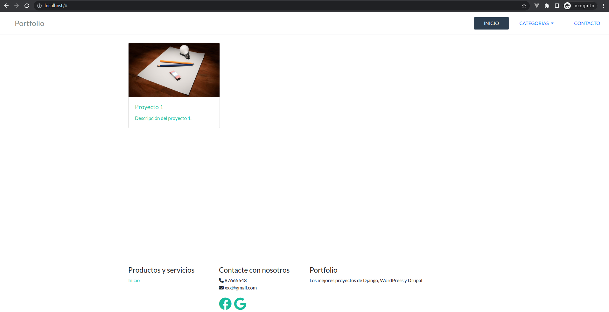
Vamos a utilizar una imagen para cada proyecto. Para poder hacer esto hemos de almacenar las imágenes en la estructura de directorios, por eso creamos una carpeta "static" dentro de src, y dentro de static crearemos otra llamada "images":
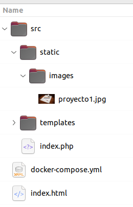
NOTA: si has de descargar imágenes de Internet, asegúrate que la licencia de dichas imágenes te lo permite. Utiliza, si es necesario, un sitio como pixabay.com para descargar imágenes con licencia libre.
Descárgate una imagen en la carpeta "images", renómbrala a "proyecto1.jpg" y completa el fichero "index.php" con el siguiente código:
<?php include("templates/header.php"); ?>
<div class="container">
<a href="#">
<div class="card" style="width: 18rem;">
<img class="card-img-top" src="static/images/proyecto1.jpg" alt="Proyecto 1">
<div class="card-body">
<h5 class="card-title">Proyecto 1</h5>
<p class="card-text">Descripción del proyecto 1.</p>
</div>
</div>
</a>
</div>
<?php include("templates/footer.php"); ?>
Ahora debería aparecer un proyecto en la página principal.
proyecto.php
Creamos este nuevo fichero a la altura de index.php y añadimos el siguiente contenido:
<?php include("templates/header.php"); ?>
<div class="container">
<h2>Título de muestra</h2>
<h4><a href="#">Año</a></h4>
<span>Categorías: </span>
<a href="#"><button class="btn btn-sm btn-default">Categoría 1</button></a>
<br> <br>
<div class="row">
<div class="col-sm">
<img src="static/images/proyecto1.jpg" alt="Proyecto 1" class="img-responsive"><br>
</div>
<div class="col-sm">Descripción</div>
</div>
</div>
<?php include("templates/footer.php"); ?>
Para consultar el resultado, introducimos en la barra de navegación la URL "localhost/proyecto.php":
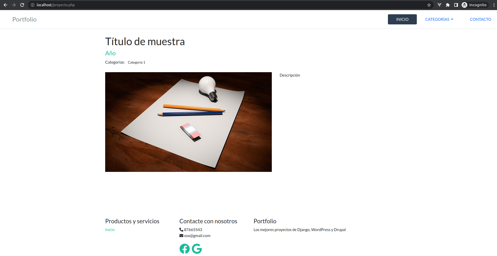
contacto.php
Descargamos esta imagen en el directorio correspondiente (con el nombre businessman.png), creamos contacto.php a la altura de index.php, e insertamos el siguiente código:
{kind=link}
<?php include("templates/header.php"); ?>
<div class="container">
<h2 class="mb-5">Contacto</h2>
<div class="row">
<div class="col-md">
<img src="static/images/businessman.png" class="img-fluid rounded">
</div>
<div class="col-md">
<h3>Nombre y apellidos</h3>
<p>Ciclo Superior DAW.</p>
<p>Apasionado del mundo de la programación en general, y de las tecnologías web en particular.</p>
<p>Si tienes cualquier tipo de pregunta, contacta conmigo por favor.</p>
<p>Teléfono: 87654321</p>
</div>
</div>
</div>
<?php include("templates/footer.php"); ?>
El resultado, al consultar la URL localhost/contacto.php, debería ser el siguiente:
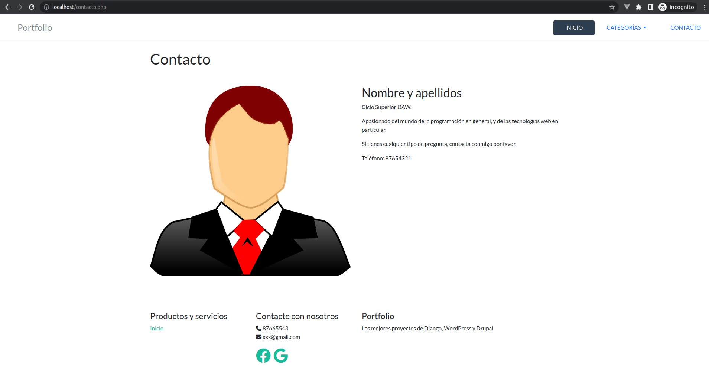
En estos momentos tenemos ya muchas cosas preparadas para poder empezar a añadir dinamismo a nuestra aplicación. En los siguientes apartados vamos a ver las diferentes estructuras que nos lo van a permitir.
MECANISMOS DE DECISIÓN¶
Teoría previa¶
Los mecanismos de decisión en PHP son muy parecidos a los de cualquier otro lenguaje de programación. Tenemos tres posibilidades:
Consultamos cada uno de los enlaces y los revisamos.
Proyecto - Activar opciones de menú¶
Vamos a ver un ejemplo de utilización de una estructura de decisión para poder activar las opciones del menú de navegación en función de la página que se encuentre activa en cada momento. Por defecto, la opción INICIO es la que se encuentra activa:
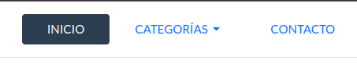
Si vamos a la URL "localhost/contacto.php", entonces la opción de menú "CONTACTO" es la que debería resaltarse (letras blancas con fondo oscuro). ¿Cómo lo hacemos?
Estas opciones de menú se configuran en header.php, en el siguiente bloque:
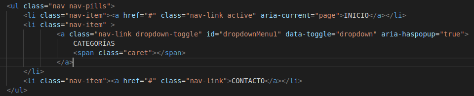
Aquí vemos que el primer elemento <a> tiene el atributo "active" en su class, pero los demás no. Lo que es necesario conseguir es que este atributo "active" sea dependiente de la URL en la que estamos.
¿Podemos llegar a saber en qué URL estamos desde el código PHP? La respuesta es "sí", mediante lo que se llama variables superglobales. Antes de revisarlas, vamos a ver cómo utilizarlas para que las opciones de menú "INICIO" y "CONTACTO" se activen/desctiven en función de que se visite la correspondiente página (dejaremos la opción "CATEGORÍAS" para más adelante). Vamos a introducir sentencias if-else para que los elementos <a> tengan un valor diferente en el atributo class, en función de la página actual. El código de la barra de navegación quedaría del siguiente modo:
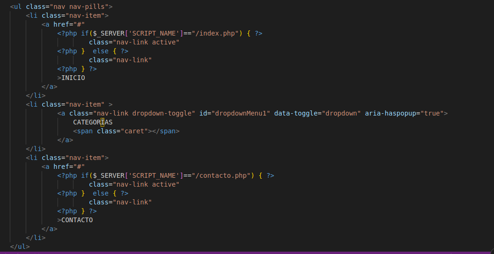
Hemos utilizado la variable superglobal $_SERVER['SCRIPT_NAME'] para averiguar el script que se ha ejecutado en el servidor, y en función de su valor definimos un valor diferente para el atributo class del elemento <a>. Prueba a ir a "localhost/contacto.php" y observa los resultados.
Simplificando el código, nos queda del siguiente modo:
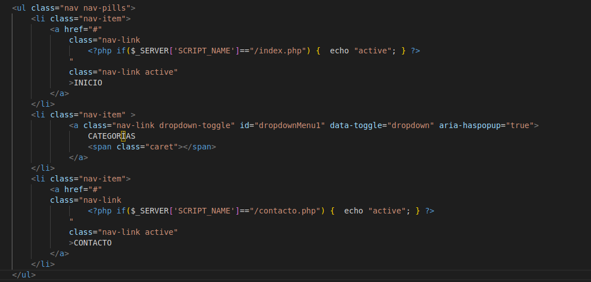
En este enlace encontrarás una referencia de las variables superglobales que nos proporciona PHP. Estas variables se utilizarán más adelante en las actividades de la unidad, y posteriormente también cuando creemos formularios. Lee el enlace con especial detenimiento y pregunta todo aquello que no entiendas.
ARRAYS¶
Ha llegado el momento en que necesitamos datos para poder mostrar en nuestra aplicación. Como aún no vamos a abordar las bases de datos, necesitamos almacenar de algún modo todos aquellos datos que pueda contener nuestra aplicación (proyectos, categorías, etc.).
Por ello vamos a trabajar primero con las estructuras de datos denominadas arrays. En cualquier caso, aunque accediésemos a bases de datos posteriormente, seguiríamos utilizando también arrays para determinadas cosas.
Teoría¶
Empecemos haciendo una revisión de lo que son los arrays en PHP. Para ello vamos a revisar el apartado Arrays de este enlace.
Proyecto - Definición de datos¶
En este paso del proyecto nos proponemos almacenar diferentes datos:
- Proyectos
- Categorías de proyectos (serán etiquetas con las tecnologías en las que se basa un proyecto)
Empezamos por los proyectos. Fijándonos en index.php, podemos extraer los siguientes datos que identificarán a un proyecto:
- Título
- Descripción
- Imagen
La mejor opción para almacenar estos datos, en forma de array, será un array asociativo cuyos elementos sean, a su vez, arrays asociativos, de la forma:
$proyectos = [
[
"clave" => "proyecto1",
"titulo" => "Título proyecto 1",
"descripcion" => "Descripción proyecto 1",
"imagen" => "static/images/proyecto1.jpg"
],
[
"clave" => "proyecto2",
"titulo" => "Título proyecto 2",
"descripcion" => "Descripción proyecto 2",
"imagen" => "static/images/proyecto1.jpg"
],
[
"clave" => "proyecto3",
"titulo" => "Título proyecto 3",
"descripcion" => "Descripción proyecto 3",
"imagen" => "static/images/proyecto1.jpg"
],
];
Ahora la pregunta es: ¿dónde es más conveniente definir esta variable? ¿en index.php? ¿en header.php? ¿en un fichero dedicado que actúe como repositorio de los datos para poder acceder desde cualquier otro fichero? Vamos a optar por la última opción.
ACTIVIDAD: Creamos un fichero datos.php a la altura de index.php y definimos la variable $proyectos. Además creamos otra variable $categorias, que será otro array asociativo con clave y nombre de categoría. ¿Cuál piensas que es la mejor estructura para el array de categorías? ¿qué valor establecerías para la clave de las categorías?
Tras completar el fichero, la estructura de directorios queda del siguiente modo:
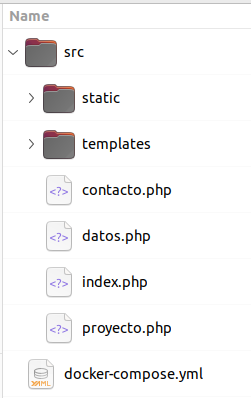
BUCLES¶
Teoría¶
Llegó el momento de dar una verdadera sensación de dinamismo a nuestra aplicación web mediante la representación de los datos que hemos venido almacenando mediante arrays, en la sección anterior. Esto lo vamos a lograr utilizando bucles, que son sentencias iterativas que nos permitirán recorrer los arrays creados y poder controlar qué hacemos con cada uno de sus elementos.
Para empezar, revisamos lo básico de los bucles en este enlace.
Proyecto - Listado de proyectos¶
Lo que más nos urge en este momento es mostrar nuestros proyectos en la página de bienvenida del sitio web. Para ello, lo más práctico es utilizar un bucle foreach. Para ello, primero hemos de incluir el fichero datos.php en index.php, y modificar el código de forma que quede así (se ha modificado también el HTML para que quede mejor distribuido):
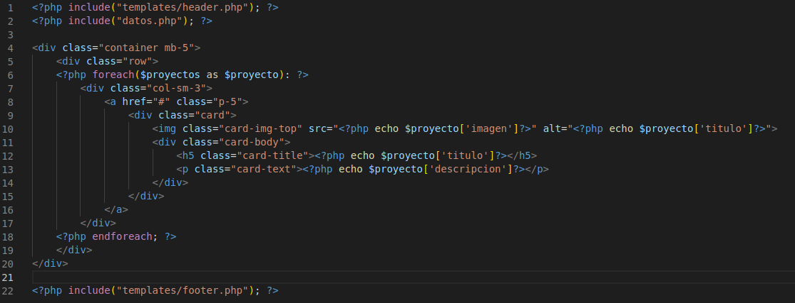
Si refrescamos la pantalla de inicio: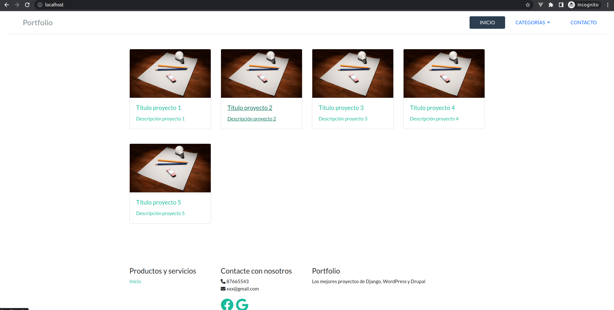
FUNCIONES¶
Teoría¶
Antes de empezar a desarrollar lógica más compleja para nuestra aplicación, es conveniente que aprendamos a utilizar los mecanismos mediante los cuales vamos a poder modularizar mucho mejor nuestro código, a la vez que vamos a propiciar un mejor mantenimiento del mismo.
Esto lo vamos a conseguir mediante la utilización de funciones en PHP. En este enlace encontrarás lo básico.
Además, existen las funciones predefinidas de PHP, que nos proporcionarán funcionalidades ya programadas, sin necesidad de tener que volver a implementarlas. En este enlace tienes una referencia.
Proyecto - Ordenación¶
En este paso del proyecto vamos a crear una función que tome un parámetro de la URL y ordene los proyectos según su título por orden alfabético descendente.
Para ello, vamos a trocear y distribuir el siguiente código, que se encarga de la ordenación de arrays por un atributo de un subarray:
usort($proyectos, 'ordenaTituloProyectoDesc');
function ordenaTituloProyectoDesc($a, $b) {
return strcmp($b['titulo'], $a['titulo']);
}
Creamos un nuevo fichero utiles.php para almacenar nuestras funciones y código reutilizable, a la altura de index.php, e introducimos solo la definición de la función "ordenaTituloProyectoDesc". CUIDADO, incluye solo la definición de la función:
function ordenaTituloProyectoDesc(\$a, \$b) {
return strcmp(\$b\[\'titulo\'\], \$a\[\'titulo\'\]);
}
Tras esto, incluimos utiles.php en index.php y ya tendremos la lógica de ordenación en la página que queremos.
Ya tenemos la lógica, pero... ¿cómo hacemos para que esta lógica se ejecute? Vimos anteriormente que existen las variables superglobales, y que una de ellas nos da acceso a los parámetros de la URL. Se trata de la variable \$_GET.
Si quisiésemos señalizar a la página index.php que queremos ordenar los proyectos en orden descendente, podríamos introducir una URL que apunte a index.php, pero con un parámetro (vamos a llamarlo "sort") con valor "-1", de la forma:
http://localhost/index.php?sort=-1
De este modo, mediante el superglobal $_GET podríamos recuperar el valor de "sort" simplemente consultando $_GET['sort']. Insertando el siguiente código en index.php, conseguimos la ordenación deseada, al pasar el parámetro sort en la URL:
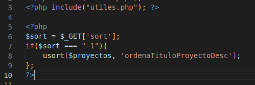
Al revisitar la página con el parámetro sort, vemos que los proyectos se han ordenado por orden descendente, según su título:
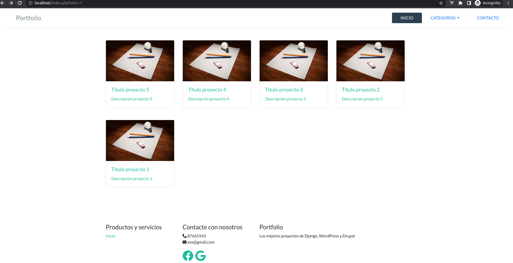
ACTIVIDAD: modifica el código anterior para utilizar ISSET.
COMENTARIOS¶
Los comentarios son el mecanismo que tienen la mayoría de los lenguajes de programación para añadir observaciones al código, con la sintaxis más básica de aprender, pero cuya utilización es la más difícil de recordar. Que no te ocurra como en el siguiente meme:
Los comentarios son importantísimos, una herramienta muy útil tanto para otros miembros de un equipo de desarrollo, como para la propia persona que está desarrollando el código en ese momento. Piensa en tu yo del futuro cuando insertes comentarios, él/ella te lo agradecerá.
Lo básico sobre comentarios en PHP lo encontrarás aquí.